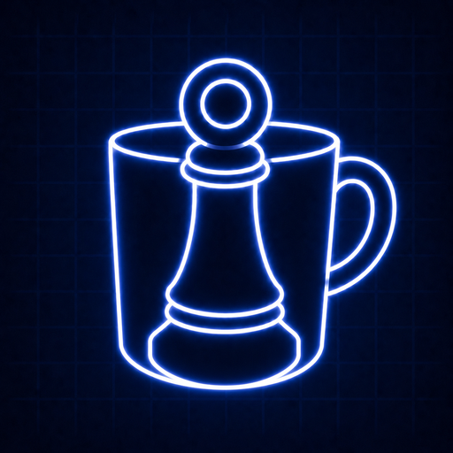

Official information page
Topological Board Game
A free experimental abstract strategy game where board games, Life systems, and scientific Labs are explored across different lattices, dimensions, boundaries, and topologies.

About This Game
Topological Board Game is an experimental strategy and research-play platform. It includes familiar board-game families such as Chess, Go, Reversi, Jump / Chinese Checkers, and Hex, then changes the board space: flat boards, cylinders, tori, spheres, higher-dimensional grids, periodic boundaries, twisted boundaries, and research-oriented discrete topological dynamics.
Life World explores cellular automata, artificial life, evolution, ecology, species interaction, mutation, noise, and topology-dependent growth. Topoboard Labs focuses on physics, mathematics, information, graph dynamics, and reproducible experiments.
This page is intentionally non-playable: it contains official project information, privacy notes, and support links only.
Support
- Steam desktop release: Steam app page
- Community and bug reports: Discord page
- Email: youxunzhangjim@gmail.com
Privacy Policy
Topological Board Game uses only public client configuration in website builds. Do not put private API keys, Materials Project keys, Steam credentials, or other secrets in frontend files. Online rooms may use Firebase/Firestore configuration that is intended to be public client configuration, while security is controlled by Firestore rules.
For privacy or account-support questions, contact the developer by email. This official page does not contain a playable canvas, embedded game, or outside play button.